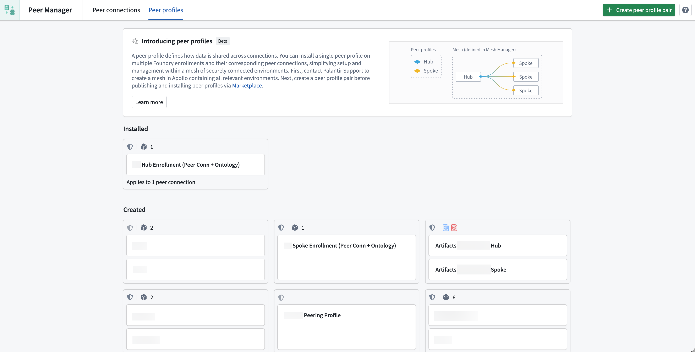
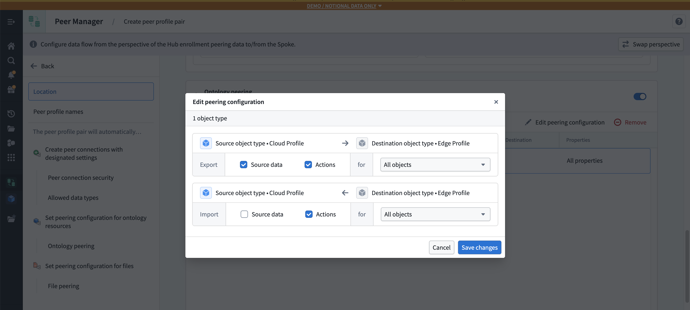
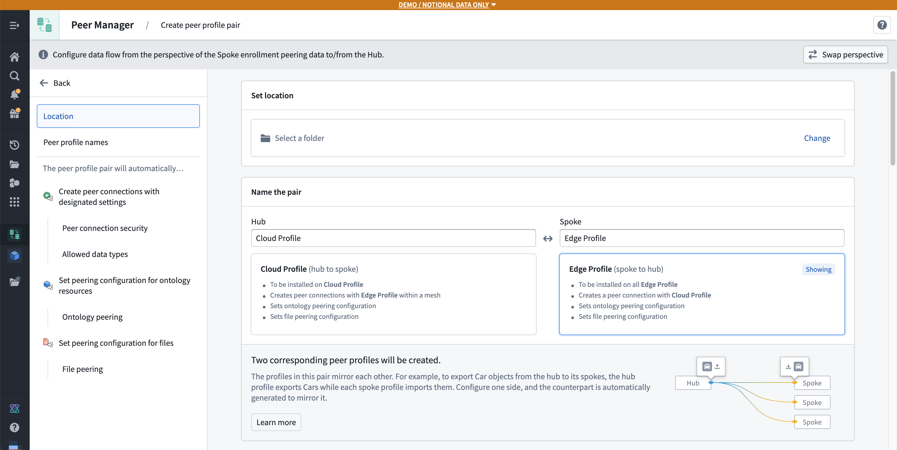
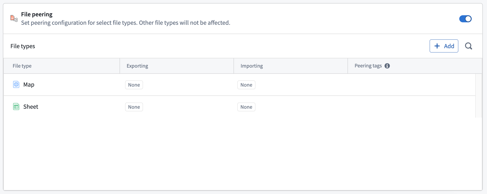
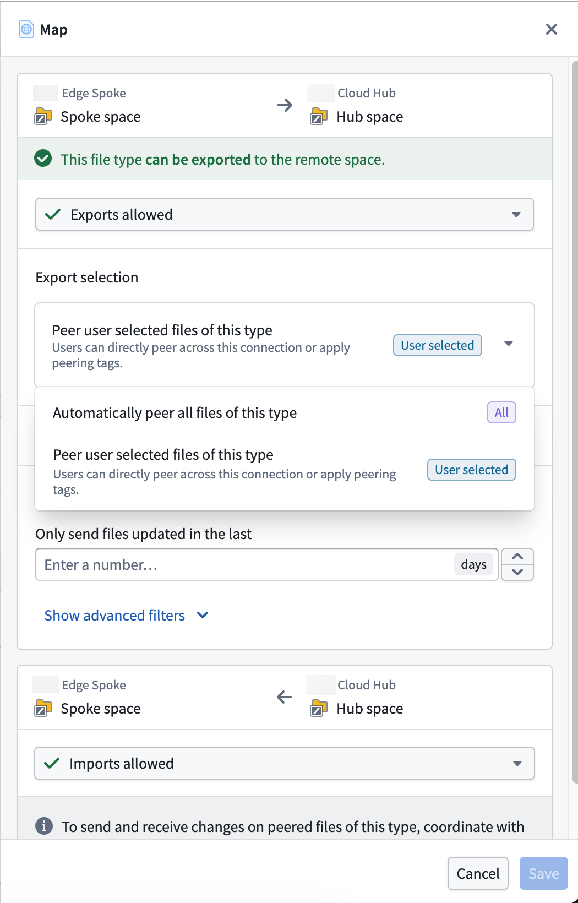
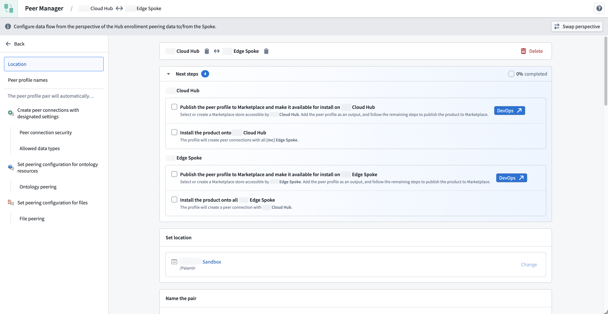

:::callout{theme="neutral" title="Beta"} Peer profiles are in the beta phase of development and may not be available on your enrollment. Functionality may change during active development. Contact Palantir Support with questions about enabling peer profiles. :::
A peer profile defines how data is shared between Foundry enrollments across peer connections and serves as a reusable template: you define your peer configuration once, and then Foundry applies that configuration consistently across many connections at once.

Peer profiles simplify the configuration and management of authorized data sharing through Ontology and file peering across multiple peer connections within a network of Foundry enrollments, particularly when many enrollments require the same peering configuration.
While you can configure each peer connection one at a time, you should use peer profiles to define your peering configuration once and apply it everywhere it is needed across a mesh of enrollments, such as a central hub connected to many edge enrollments.
Additionally, peer profiles streamline data sharing across many peer connections by enabling you to:
A mesh is a secure network of connected Apollo environments that automatically enables data sharing across multiple peer connections defined by a peer profile.
:::callout{theme="neutral"} Before you create a peer profile, contact Palantir Support to create a mesh for you that contains all environments you plan to connect through the peer profile. :::
You will create a profile pair for each peer profile you configure in Peer Manager, with one profile for each side of the peer connection. These two profiles mirror each other automatically.
For example, consider a setup with a hub and multiple spoke enrollments, where the:
If the hub profile is configured to export a certain object type, the corresponding spoke profile is automatically set to import that same object type. When creating a peer profile, you only need to configure one side of that profile pair, as Peer Manager generates the counterpart profile for you.
When installing a profile, you choose which remote enrollments it applies to. The available options include:
Use a single peer profile to bundle configuration for peer connections to share ontology resources and files.
Peer profiles can automatically create and manage peer connections, including:
Ontology peering synchronizes object types and link types between enrollments. Within a peer profile, you can specify:
This enables cross-enrollment object synchronization, including real-time action peering so user edits on one enrollment flow to others.

File peering synchronizes Gotham files, such as Gaia maps, between enrollments. Within a peer profile, you can specify:
File types not included in the profile are unaffected.
Hub and Spoke are placeholders for each side of your peer connection.
:::callout{theme="neutral"} Select Swap perspective to toggle between the hub and spoke perspectives while configuring a peer profile. Peer Manager automatically mirrors changes to one side on the other. :::
Next, follow the instructions below to set the peering configuration for your selected file types in the File peering section:


Now that you have configured file peering for the peer profile, select Create peer profile, and Peer Manager will create two draft peer profiles: one for each side of the peer connection.
:::callout{theme="neutral"} Review the Marketplace and DevOps documentation before proceeding to learn more about creating, publishing, and installing products via the Marketplace storefront on your Foundry enrollment. :::
After you select Create peer profile, Peer Manager loads the Next steps needed to publish each profile in your pair to Marketplace and make them available for installation on the hub and spoke enrollments. Peer Manager provides checklist boxes for you to track your progress.

Select DevOps â to open each profile as a pre-configured product draft in DevOps.
Use Marketplace to install the published profile on each target enrollment. During installation, select:
Once installed, the profile automatically creates or configures the appropriate peer connections and begins sharing data according to your peer connection's settings.
Learn more about installations in Marketplace.
:::callout{theme="neutral"} You cannot edit a peer profile after installation. Uninstall the peer profile, make and save your changes, then reinstall it on the target enrollment. :::
After you install the peer profile on each target enrollment, you can select it from the Installed section of the Peer profiles page to view its:
Peer connections within the mesh are automatically created with the configuration defined in the profile. If a peer connection already exists, the profile's configuration is applied to the existing connection.
Yes, depending on the remote strategy that the installed peer profile uses. For example, if the peer profile uses a Mesh remote strategy, the peer profile applies to any current and future peer connections that are part of the specified mesh.
The connection will show a status indicating that the remote system does not have a matching installed configuration. Once the remote side installs the corresponding hub or spoke profile, the connection will become healthy.